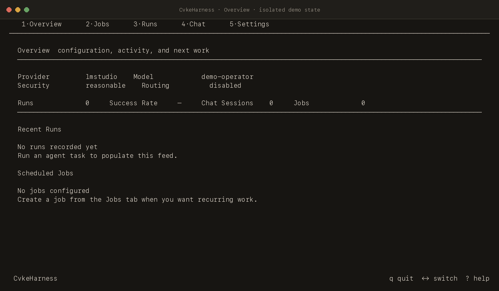
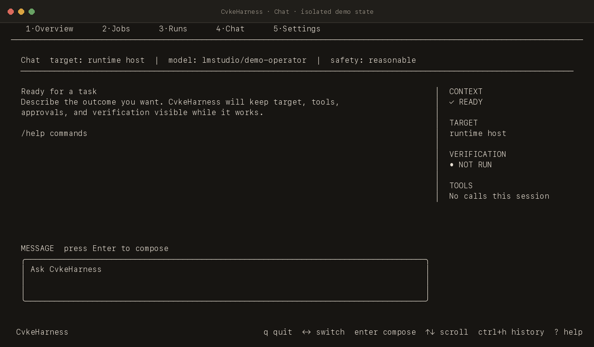
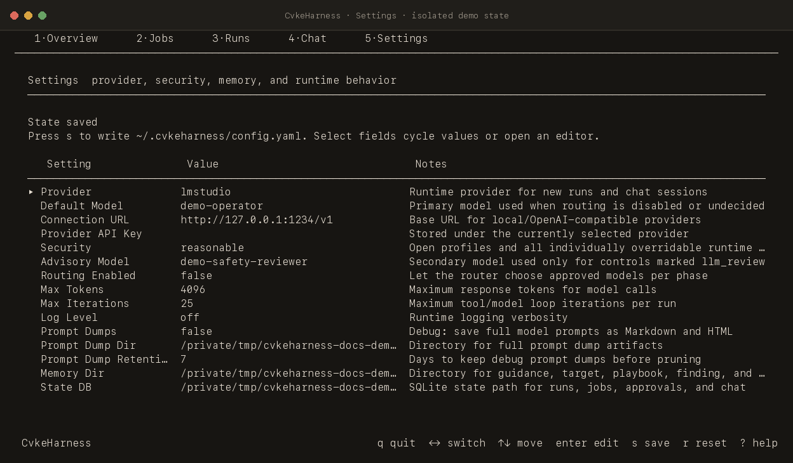

01 / System overview
A local control plane for model-assisted operations
CvkeHarness is a provider-agnostic Go operations agent. It surrounds each model call with an explicit operating context: interaction mode, task class, target identity, bounded memory, approved model selection, tool authorization, outcome verification, and durable local history.
run [task] performs bounded work and exits. console keeps an operator workspace and conversation alive.
The runtime distinguishes the harness host from the system being operated on and retrieves memory only for an exact active target.
Tool schemas define available capabilities. The registry evaluates every requested call against the effective policy before dispatch.
Runs, chat, approvals, routing evidence, schedules, telemetry projections, and operational knowledge share one local state authority.
run for one bounded task that returns to the shell. Use console for a persistent, keyboard-first workspace. tui remains a compatibility alias for Console.
02 / Quick start
Build once, configure a provider, then choose an operating mode
The project targets Go 1.26.2 or newer. Setup can connect the official Codex CLI ChatGPT session, OpenAI, OpenRouter, or a local OpenAI-compatible LM Studio endpoint.
- 01BuildCompile the current tree into a local binary.
- 02ConfigureSelect a provider, model, safety profile, capabilities, routing, and memory location.
- 03OperateStart one bounded run or enter the persistent Console.
go build -o cvkeharness .
./cvkeharness setup
./cvkeharness run "inspect the current process list"
./cvkeharness console --view chat03 / Operator surfaces
The CLI covers setup, bounded work, ongoing operations, and administration
The root command exposes thirteen product and engineering command groups. Cobra also supplies shell completion. The table separates everyday operator paths from administrative and evaluation paths.



| Command | State | Implemented purpose |
|---|---|---|
| Primary interaction | ||
setup / settings | Implemented | Four-stage onboarding and an editor for provider, model, safety, capabilities, routing, limits, web search, guidance, and local machine notes. |
run [task] | Implemented | One bounded routed task, optional routing explanation, and plain/rich shell transcript modes; then exit. |
console [--view] | Implemented | Five workspaces: Overview, Jobs, Runs, Chat, and Settings. tui is an alias. The initial view is selectable. |
| Control-plane administration | ||
memory | Implemented | Show, review, promote, reject, revoke, delete, export, validated import, rollback, and target-environment binding. |
models | Implemented | Favorites, recent requested/actual models, aliases, shortlist, durable approval, and normalized performance stats. |
commands | Implemented | Inspect grants and legacy approvals, approve one exact command, or resume one exact captured blocked action. |
jobs | Implemented | Create, update, pause, resume, remove, run, loop over, inspect history for, and check health of internal agent jobs. |
cron | Implemented | List, show, preview, add, update, remove, enable, and disable current-user crontab entries. |
daemon | Linux path | Run the scheduler loop or install/manage a user or system systemd unit. |
| Evaluation and engineering | ||
scorecard | Implemented | Deterministic shell-policy scorecard with Markdown and JSON output. |
redteam | Implemented | Live model evaluation against shadow tools; writes Markdown and JSON reports. |
fuzztool | Implemented | Runs the two shell-policy fuzz targets for a configured duration and writes a report. |
Chat is local-command aware
The Console Chat composer handles /new, /clear, /memory, /export, /tools, /history, and /help within the local interface. Prefixing with // sends a literal leading slash to the provider.
04 / Architecture
The control plane composes policy, state, providers, tools, and memory around each task
The bounded runtime uses planning, execution, and memory-curation phases. Chat reuses the same provider, tool, target, retrieval, verification, telemetry, and persistence stack with a pinned chat selection and retained message history.
- Bootstrap: load configuration, immutable policy, SQLite, provider, and tools.
- Scope: classify the task, resolve the target, and retrieve exact bounded memory.
- Act: route the model by phase and authorize every requested tool call.
- Verify: check the claimed result and make a bounded repair attempt when needed.
- Record: persist the outcome and telemetry, then curate bounded memory candidates.
Prompt context is compiled in stable layers
The runtime layers built-in rules, compiled guidance.md, a compact runtime-host summary, exact target context, a narrowly selected playbook/caution/finding set, task and phase instructions, and current tool definitions. Debug prompt dumps are optional, redacted, private, retention-limited artifacts.
05 / Agent loop
A bounded model–tool loop closes on evidence
Agent.Run establishes the run record, classifies the task, derives the relevant tool set, optionally requests a planning note, selects the execution model, and enters runExecutionPhase. The execution phase resolves the target and retrieves memory before the first provider request.
- Compile the current messages, tool schemas, and prompt hashes.
- Call the selected provider with temperature 0.2 and the configured token cap.
- Authorize and execute requested tools, then append structured results.
- Verify a final answer against observed actions and required evidence.
- Complete, make a bounded repair, or stop with a machine-readable reason.
max_iterations times. Completion repair defaults to two attempts and is also bounded by the remaining iteration budget.Stop conditions are explicit
| Condition | Recorded outcome | Operator meaning |
|---|---|---|
| Verifier satisfied | Completed | The final answer and observed calls satisfy the completion check. |
| Approval required | Blocked | Non-interactive work returns a work ID. Console Chat can preserve the active session while an exact action is reviewed. |
| Capability unavailable | Incomplete | Repair identified a required capability outside the refreshed tool set. |
| No progress / repair limit | Incomplete | The loop records a stop reason instead of repeating the same unsuccessful completion. |
| Iteration limit / provider error | Failed | The bounded loop or provider call ended before a verified completion. |
// Helper names below summarize the corresponding inline source blocks.
for iter := 1; iter <= a.opts.MaxIterations; iter++ {
resp := provider.ChatCompletion(messages, toolDefs)
if len(resp.Message.ToolCalls) > 0 {
authorizeExecuteAndAppendResults(resp.Message.ToolCalls)
continue
}
verification := verifyCompletion(prompt, resp.Message, observedCalls)
if verification.satisfied() { return completed }
if repairBudgetAvailable(verification) { reclassifyAndRepair(); continue }
return incompleteWithStopReason
}Prompt plan and capability refresh
The prompt planner emits separate system messages for durable guidance, the authoritative tool policy, bounded host/target memory, and optional planning notes. It hashes the stable prefix and full request for telemetry and diagnostics. A failed completion can trigger task reclassification; when that changes the tool set, the system-message prefix is rebuilt while the conversation’s volatile messages remain intact.
06 / Action authorization
Every effect resolves through one immutable policy snapshot
The standard registry always includes shell execution and conditionally adds memory, scheduling, system cron, and public web research. Relevant tools are advertised per task, but registry and shell policy still authorize each call at execution time.
| Tool | Availability | Boundary |
|---|---|---|
shell_execute | Always | Parses compound shell input, classifies effects, applies the strictest decision, rechecks scoped grants, runs through sh -c with time/output limits, and records redacted outcomes. |
memory_record_finding | With memory | Submits an untrusted, target-scoped finding candidate for later operator review and promotion. |
schedule_manage | With SQLite | Internal job mutation passes through scheduled-change policy before reaching the scheduler. |
system_cron_manage | With SQLite | Current-user crontab mutation is policy-gated and audit recorded. |
web_search / web_fetch | Opt-in | Tavily-backed, bounded, public research only; domain rules and internal/private/metadata target rejection apply. |
Decision pipeline
Five profiles—extra_strict, reasonable, less_strict, minimal, and yolo—resolve with per-setting overrides into one hashed effective policy. reasonable is the fresh-install default.
- Bind the exact action, arguments, and executor scope.
- Parse shell segments, redirects, nested syntax, targets, and effects.
- Resolve each effect through the immutable policy snapshot.
- Apply the strictest decision: deny, ask, LLM review, or allow.
- Dispatch allowed work; review paths consume an exact grant once.
| Profile | Read commands | Unknown commands | File overwrite | Credential access | Command limits |
|---|---|---|---|---|---|
extra_strict | allow | deny | deny | deny | 4 KiB · 4 segments · 15 s |
reasonable | allow | ask | ask | deny | 8 KiB · 16 segments · 30 s |
less_strict | allow | llm_review | allow | ask | 16 KiB · 24 segments · 60 s |
minimal | allow | allow | allow | ask | 32 KiB · 32 segments · 120 s |
yolo | allow | allow | allow | allow | 64 KiB · 64 segments · 3,600 s |
Exact one-use approval
A grant binds the action digest, effect digest, effective-policy hash, host, principal, working directory, and executor scope. Approval-created grants expire after 15 minutes and carry one remaining use. Resuming blocked work reconstructs the action under its captured scope and rejects any digest or policy mismatch.
switch value {
case securitypolicy.DecisionDeny: return 4
case securitypolicy.DecisionAsk: return 3
case securitypolicy.DecisionLLMReview: return 2
default: return 1
}07 / Operational memory
Operational knowledge is target-scoped, reviewable, and bounded at retrieval
The memory subsystem distinguishes the runtime host from ssh, local_container, and unknown targets. A newly observed remote target starts as a provisional record with environment=unknown and confidence 0.5. Operator binding establishes the environment and remote identity required for active target-scoped retrieval.
- Observe typed facts, structured tool outcomes, verification evidence, and concrete failures.
- Create a target-scoped candidate with source, TTL, confidence, and integrity hash.
- Review the candidate and bind the target environment where required.
- Promote, reject, revoke, or delete through explicit operator commands.
- Retrieve a compact brief after all scope and evidence gates pass.
| Record | Lifecycle | Retrieval role |
|---|---|---|
| Host facts | Typed low-risk observations begin as candidates and require trust, scope, integrity, freshness, and active status. | A tiny host/target summary. |
| Playbooks | Verifier-backed procedures require evidence, exact target/environment scope, and a meaningful success check. | One primary verify-first procedure. |
| Findings | Narrow reusable observations, including model-submitted candidates, enter the review lifecycle. | One fallback when a strong playbook is unavailable. |
| Cautions | Short-lived negative memory from concrete failures or policy denials. | At most one relevant warning. |
Retrieval is a selection pipeline
RetrievePlan loads user-authored guidance, resolves the runtime host and active target, reads canonical SQLite state, classifies intent, and independently scores playbook, caution, and finding candidates. A live target binding, exact target/environment match, active status, operator or verified trust, current evidence, and a valid integrity hash are required. Playbooks also require a meaningful success check.
| Layer | Cardinality | Selection rule |
|---|---|---|
| Runtime host summary | one small summary | Current canonical runtime-host record. |
| Active target summary | up to one | Resolved, unambiguous target with live binding. |
| Playbook | up to one | Highest score across intent/tool strength, confidence, outcomes, and freshness. |
| Caution | up to one | Relevant live caution for the same target and intent/tool context. |
| Finding | up to one fallback | Included when playbook match strength is below the strong threshold. |
if playbook.TargetID != targetID ||
!liveOperationalItem(playbook.Status, playbook.Trust,
playbook.Environment, env, playbook.ExpiresAt, now) ||
playbook.EvidenceHash != playbookIntegrity(playbook) ||
len(playbook.SuccessChecks) == 0 {
continue
}Deterministic curation
Successful shell_execute calls are grouped by resolved target. A verifier-backed outcome can produce a playbook candidate with verification, action, and success-check steps. Failed calls can reduce matching playbook confidence and create short-lived cautions. Public web research calls are skipped during operational-memory curation.
guidance.md is user-authored prompt context. targets.md, playbooks.md, findings.md, and cautions.md are generated operator views and explicit validated-import surfaces. SQLite remains canonical, and memory retrieval stops when canonical state is unavailable.
08 / Providers and routing
Four provider paths share one structured model-and-tool contract
The provider interface is intentionally small: a structured chat request goes in and a structured response with messages, tool calls, usage, and actual model identity comes back.
| Provider | Authentication / transport | Notes |
|---|---|---|
codex | Official Codex CLI ChatGPT OAuth cache. | Reads ~/.codex/auth.json without refreshing it and uses the ChatGPT Codex Responses backend. |
openai | OpenAI API key and Responses API. | Maps harness messages and tool-call state to Responses input/output items. |
openrouter | OpenRouter API key and OpenAI-compatible chat. | Default fresh configuration path; preserves provider-native model names. |
lmstudio | Local OpenAI-compatible endpoint. | Defaults to http://localhost:1234/v1; used by hermetic E2E stubs as well as LM Studio. |
Routing learns within approval policy
When enabled, routing scores approved candidates using local phase, task-class, toolset, success, policy-denial, and latency history. Low-confidence results fall back to the configured default. A strong unapproved candidate requires one-off approval in an interactive CLI context; durable reuse requires explicit model approval.
Fresh configuration defaults
The code defaults to OpenRouter, anthropic/claude-sonnet-4.6, reasonable security, automatic routing within policy, 4,096 output tokens, 25 iterations, 0.55 routing confidence, logs off, and web search off. Web research uses Tavily with five basic-depth results and a 12,000-character fetch budget when enabled.
09 / Scheduling
Internal agent jobs and system cron are separate systems
Internal jobs store an agent prompt and an at, every, or five-field cron schedule in SQLite. The scheduler uses claims, leases, heartbeats, overdue events, run history, and blocked-work state to reduce duplicate execution and keep deferred approvals inspectable.
System cron management operates on the current user’s crontab. Managed entries receive stable CvkeHarness identifiers; dry-run previews changes, and every write is policy-gated and audit recorded. The Linux daemon path can install and manage a systemd user or system service. Installation and startup remain explicit lifecycle commands after configuration is saved.
10 / Persistence and telemetry
Local state is private, structured, and split by purpose
Configuration and user-authored guidance live beside the SQLite state database under ~/.cvkeharness/. Files and database sidecars are created with private permissions. Model/tool outcome fields, telemetry events, chat exports, and prompt dumps pass through secret masking before persistence.
| Plane | Primary artifacts | Purpose |
|---|---|---|
| Configuration | config.yaml, guidance.md | Provider, models, immutable security selection, capabilities, routing, limits, web search, and user-authored operating guidance. |
| Canonical SQLite | state.db plus WAL/SHM | Runs, phases, tools, routing stats/candidates/approvals, chat, exact grants, blocked work, schedules, cron audit, operational memory, snapshots, and telemetry projections. |
| Readable memory | targets.md, playbooks.md, findings.md, cautions.md | Generated operator views, explicit validated import/export, and rollback snapshots. |
| Canonical telemetry | telemetry/live/events.jsonl | Append-only redacted events for planning, classification, model calls, tools, approvals, verification, task state, and scheduler lifecycle; projected into SQLite for queries. |
| Optional diagnostics | prompt_dumps/, exports/ | Redacted prompt debugging and private conversation export; prompt dumps are default-off and retention-limited. |
11 / Code map
Twenty-seven Go packages keep the control-plane boundaries visible
The repository is large enough to be substantial but still organized around explicit composition points. Start with cmd/run.go for bounded work and cmd/tui.go for the Console.
| Area | Responsibility | Deep reference |
|---|---|---|
cmd/ | Cobra surface, setup/settings, runtime composition, Console startup, jobs, daemon, cron, models, memory, and safety commands. | Architecture |
agent/, core/, router/ | Classification, phase orchestration, chat state, prompt planning, verification/repair, task lifecycle, and approved routing. | Visual guide |
tools/, securitypolicy/ | Capability registry, effect classification, shell parsing/execution, one-time grants, scheduling, cron, memory, and web tools. | Security controls |
memory/, state/ | Target resolution, candidate lifecycle, retrieval gates, import/export/snapshots, SQLite schema, audit records, and projections. | Memory guide |
internal/tui/, internal/setuptui/ | Keyboard-first Console and setup UI, chat timeline, approval continuation, responsive terminal rendering, and settings. | Console design system |
scheduler/, systemcron/ | Schedule parsing, durable job claims/leases/heartbeats, manual/due runs, and current-user crontab parsing/writes. | Scheduling guide |
provider/, internal/httputil/ | Provider-neutral messages/tools plus Codex, OpenAI, OpenRouter, LM Studio, retries, timeouts, and backoff. | Provider architecture |
12 / Verification
Current source and hermetic executable journeys pass locally
This inventory was checked against the working tree at commit f5b4c8f. The repository contains 418 Go test functions and two fuzz targets across 27 packages.
| Check | Result | Evidence boundary |
|---|---|---|
go build -o /private/tmp/cvkeharness-current . | Passed | Current local source builds with Go 1.26.2. |
go test ./... | Passed | All package suites passed after allowing loopback listeners used by local HTTP test servers. |
go vet ./... | Passed | Static analysis passed locally. |
./scripts/test-e2e.sh | Passed | Seven top-level executable tests passed, including setup widths 80/100/120, local commands, verified tool use/export, exact approval continuation, and unapproved-action rejection. |
| HTML structural validation | Passed | Standalone markup, headings, anchors, tables, diagram accessibility, and placeholder checks. |
| Browser render QA | Passed | Desktop 1440×1000, mobile 390×844, and print rendering inspected locally. |
13 / Scope boundaries
Read current capabilities together with their enforcement boundary
The current system is shell-centric and local-first. Target discovery primarily uses prompt hints and observed tool calls. Retrieval uses structured scoring and bounded cardinality. Routing becomes more informative as local outcome history grows. Daemon installation targets Linux/systemd. The next hardening frontier includes remote endpoint fingerprinting, typed cloud/Kubernetes/database change plans, operating-system sandboxing, filesystem staging, tamper-evident audit, and provider-native recovery.
| Document | Use it for | Freshness note |
|---|---|---|
| README | Setup, command reference, configuration, prompt stack, tools, layout, and contributor workflow. | Primary narrative entry point. |
| Architecture | Detailed component and sequence diagrams plus package responsibilities. | Mapped to source on 2026-08-15. |
| Security controls | Profiles, all enforced controls, approval scopes, invariants, and non-claims. | Current effect-policy model. |
| Operational memory guide | Target identity, candidate lifecycle, retrieval gates, and operator review. | SQLite-canonical model. |
| Scheduling guide | Internal jobs, cron, daemon, persistence, agent tools, and V2 ideas. | Contains both implemented and explicitly future sections. |
| Product context / design system | Interaction contracts, user posture, terminal layout, keyboard behavior, and visual language. | Normative product/design intent. |
| Scorecard, red-team, fuzz report | Generated point-in-time evaluation artifacts. | Historical commits and dates; regenerate before treating as current evidence. |
| Hardening plan | Historical risks and roadmap ideas. | Use as dated planning context; several items now have implementations elsewhere in this guide. |
14 / Glossary
Project vocabulary
These terms carry specific meanings throughout the codebase and operator interface.
- Active target
- The resolved system that a task or tool call operates on. It may be the runtime host, an SSH target, a local container, or an unknown/provisional target.
- Blocked work
- A durable task state containing a redacted approval request and the exact captured action required to continue.
- Candidate
- An operational-memory record awaiting explicit review and promotion before it can satisfy active retrieval gates.
- Console
- The persistent five-workspace terminal interface: Overview, Jobs, Runs, Chat, and Settings.
- Effective policy
- The immutable, hashed result of resolving a security profile together with valid per-control overrides.
- Effect
- A classified consequence of a tool action, such as file overwrite, network access, service change, or credential access.
- Exact grant
- A short-lived, single-use approval bound to action/effect digests, policy hash, host, principal, working directory, and executor scope.
- Finding
- A narrow target-scoped operational observation that can serve as fallback context after review.
- Phase
- A model-selection and recording boundary such as planning, execution, verification, chat, or memory curation.
- Playbook
- A target-scoped procedure with verification, action, and success-check steps, ranked for a matching intent and tool context.
- Runtime host
- The machine running the CvkeHarness process. It remains distinct from a remote active target.
- Tool advertisement
- The set of schemas presented to the model for a turn. Dispatch authorization is evaluated when a specific call is requested.
- Verifier
- The completion check that compares a claimed final answer with the task, observed tool calls, and required evidence.